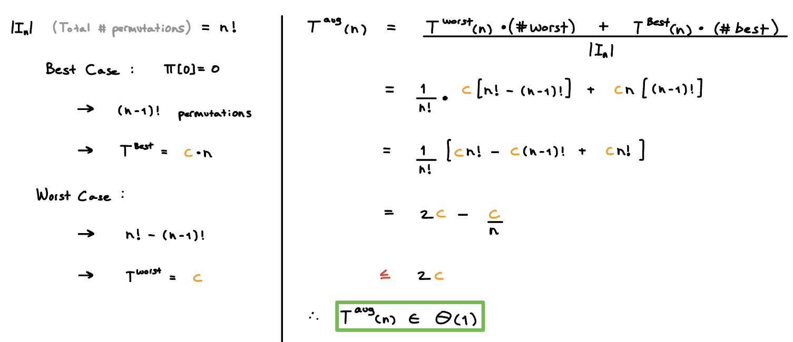
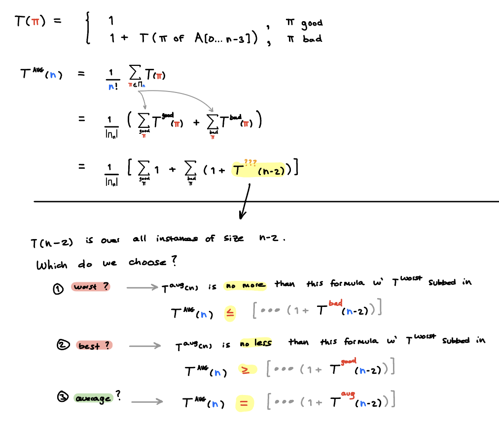
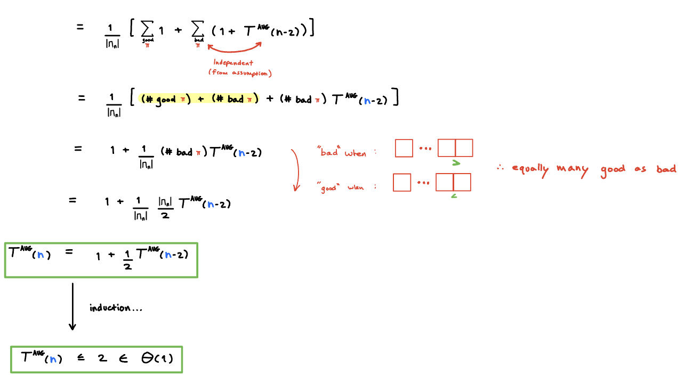
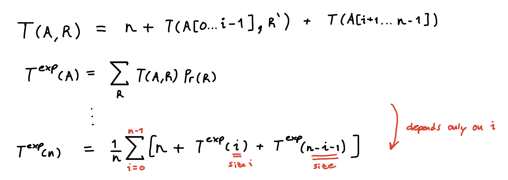

M3
Average-case Analysis
Whenever worst-case and best-case are far apart…good to look at average-case
Examples
# input instances is finite
Ex 1 - Finite
 smallest-first(, n)
smallest-first(, n)if π[0] = 0 then
run-time
else
run-time
π
- permutation {0, … n-1}
- stored as array
n
- size of π
Analysis

Easy to find average run-time → count # worst instances & # best instances
# input instances not finite
Ex 2 - Non-Finite
avgInstanceDemo(A, n)if n ≤ 2
return
if
A[n-2]>A[n-1]return
else
avgInstanceDemo(
A[0…n-3], n-2)Analysis
- Let be the # of recursions (calls to avgInstanceDemo)
Ais an array → # of input instances is not finite

Average Case:
- run-time depends only on relative order → use sorting permutations
- gives us a finite set that we can average over
- Count recursions (or something else) to not have to bother writing constants.
→ # recursions is proportional to run-time
- Break up run-time depending on which case (good, bad)
- determine run time in good case & bad case
depends on
- because when you recurse on a smaller subarray (n-2), that subarray is average (not a worst case, or best case)…
- true for this particular algorithm because the decision is made by looking at the last 2 items. The recursion depended on front n-1 items. They do not interfere with each other. (what happens on the front n-2 items → what you recurse on, does not depend on wether or not you are bad or good
 does not depend on
- we assumed this earlier…over all of the together (good and bad). Wether is good or bad, it’s the same average!

If:
- All input items are distinct
- Comparison Based algorithm
Then:
runtime only depends on relative order
Can treat all instances with the same relative order as a single instance
→ finite # instances to consider
→ sorting permutation instead of
→ instead of
Sorting

code
quick-sort(A)if n ≤ 1
return
p ← choose-pivot(
A)i ← partition(
A, p)quick-sort(
A[0,…,i-1])quick-sort(
A[i+1,…,n-1])
Analysis
# key comparisons for size n array
Worst Case
 💡Worst Case Run-Time is
💡Worst Case Run-Time is The above bound is tight in the case when every recursive call has size n-1
- n levels of recursion
- n-1 key comparisons for each level
Best Case
 💡Best Case Run-Time is
💡Best Case Run-Time is The above bound is tight in the case of merge sort
- every recursive call has size n/2
Average Case
Step 1 - randomize
quick-sortp←random-
-
Step 2 - Find
 Step 3 - Get

Step 4 - Reason to find
- (found earlier)
- the average case can’t be better than the best case →
- this →
Sorting Algorithms - Summary

Lower Bounds for Sorting
Can we do better than time
In the worst case? Never
In the best case?
| Comparison Based | Non Comparison Based | |
|---|---|---|
| Best Case | | |
Follows a decision tree structure → Compare 2 items at a time → true or false (All comparison based algorithms
Decision Tree
- comparison at nodes
- resulting sorting permutation at leaves
EX

Any comparison-based sorting algorithm at least comparison operations
proof
# leaves ≥ # sorting permutations =
n!h≥ log(# leaves) = For some input A → we took
hmany comparisons to get there→ at least comparisons
worst case →
Non-Comparison Based A
Assumptions:
- Base numbers

- Same # digits,
m
- pad with leading zeros

bucket-sort
Idea
- partition to buckets based on digit
- Merge buckets back into the
Code
bucket-sort(A,d)A: array, size n, each digit in {0,…,R-1}
d: index of digit to sort by
B[0…
R-1] ← (empty lists) bucket for every possible value of a digit)1 - Items in
A→ buckets (based on it’s digit)for i ← 0 to n-1
b ← digit
dof A[i]bucket ← B[b]
add A[i] to bucket
1 - Go through buckets in order, put back items into A
i ← 0
for j ← 0 to R - 1
while B[j] not empty
A[i] ← first element of B[j]
i++
Analysis
Run-time: (linear, regardless of R)
- items → buckets
- Go through all buckets → put items back in
Auxiliary Space
for array of buckets
items in buckets
bucket-sort is stable→ For items that are equal in the current digit, d, it keeps them in the same relative order.
- ie: 230,…, 320,…,210 will be in the same relative order after sorting by that digit
MSD-Radix-Sort
Idea
- bucket-sort(
A,MSD)
- Recurse on each bucket (determine buckets in A)
A- bucket
d=d+ 1

Code
MSD-radix-sort(A,L← 0,r← n-1,d← MSD)A[L…r]: part of array we’re sortingif L ≥ r: return (base case)
bucket-sort(
A[L...r],d)if d < 0: return (done!)
Find buckets, sort each one:
L’ ←
Lwhile L’ <
rr’ ← max index of where A[L’…r’] have the same digit (a bucket)
MSD-radix-sort(
A[L’…r’], L', r',d+1)L’ ← r’ + 1
Efficiency
Run-Time -
ntotal items
- each with
mdigits
- each is base
R
Worst-Case
n/2 buckets of 2 itemseach subsequent recursion → nothing splits until the very last digit
→ many recursions
but
- R is usually a constant (like 10)
- m is # digits → usually finite → constant
so runtime is
LSD-Radix-Sort
Loop Invariant: is sorted from digit to
- Running
bucket-sorton an iteration of the loop, won’t mess up the order that was made in the previous iterations of the loop.

Code
LSD-radix-sort(A,)A: size n array, m-digits, radix Rfor d ← LSD to MSD
bucket-sort(
A,d)
Analysis
Time Cost -
M3 Summary
Randomized Algorithms
- Reduce likelihood of bad cases
Best-Case, Worst-Case, Average-case
- For a well-designed randomized algorithm → average-case run time of
Ais the same as the exp-luck run-time ofA-shuffled
Sorting can be done in time. Faster is not possible for general input
heap-sort: only time with aux-space
merge-sort
- time
- selection-sort
- insertion-sort sorts are
quick-sort
- worst case is
- often fastest in practice
radix-sort
- if the input is special

{kind=link}
{kind=link}
{kind=link}
{kind=link}
{kind=link}